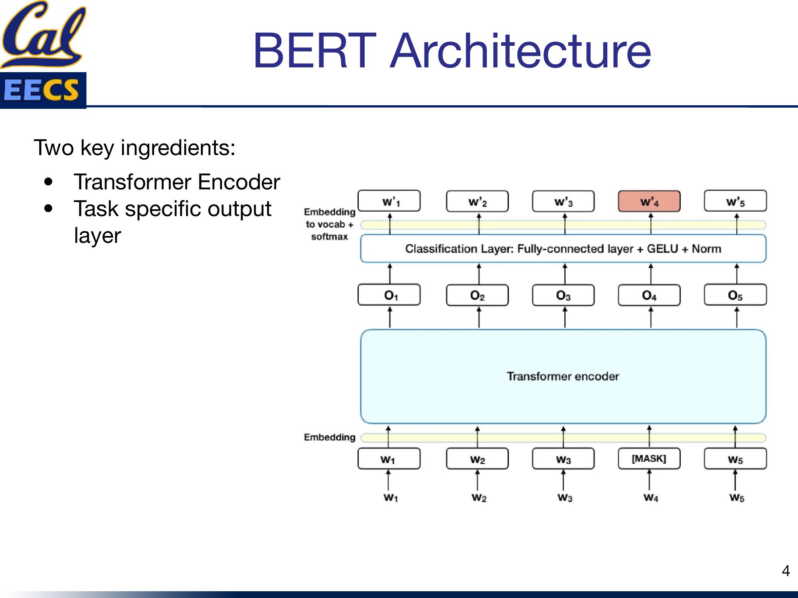
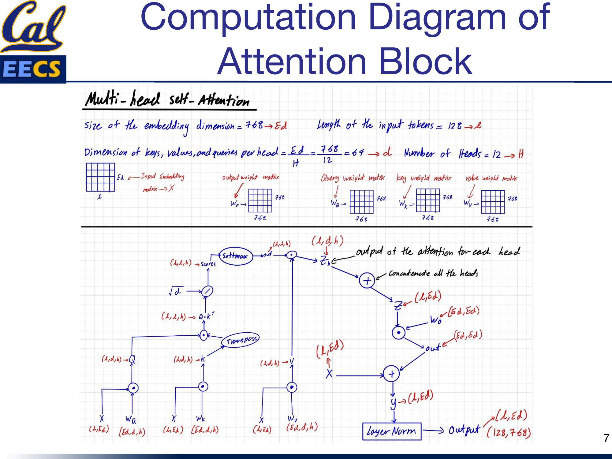
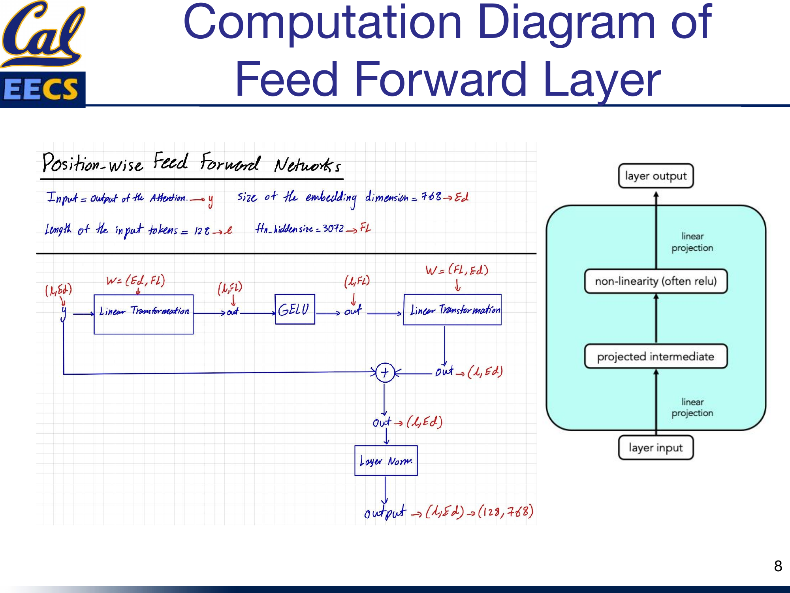
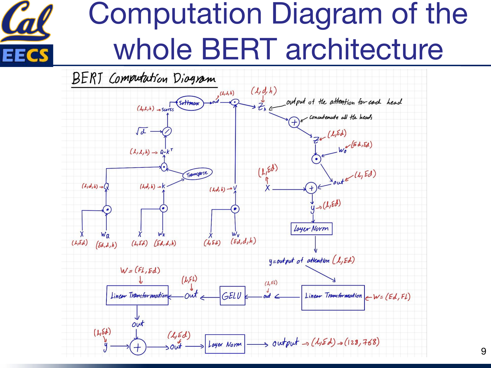

Details of the BERT Model
By Hiva Mohammadzadeh | Stanford MSCS · UC Berkeley EECS
What Makes BERT Different
BERT stands for Bidirectional Encoder Representations from Transformers, and the word that matters most in that name is bidirectional. Before BERT, most language models read text left-to-right (or right-to-left). BERT reads the entire sequence at once. That means when the model processes a token, it has access to every token to its left and every token to its right. The context is complete.
BERT is an encoder-only model. It does not have the decoder stack you see in GPT-style architectures. There is no autoregressive generation here -- the entire input is processed in parallel. This design choice is what makes BERT so effective for understanding tasks: classification, named entity recognition, question answering, and anything else where you need to comprehend the full input before producing an output.
The base configuration I work with uses 128 tokens as the sequence length, an embedding dimension of 768, 12 attention heads, and a feed-forward filter size of 3072. The model consists of 12 stacked transformer encoder blocks, each containing two sub-layers: a multi-head self-attention mechanism and a position-wise fully connected feed-forward network.
Training: Masked Language Modeling and Next Sentence Prediction
BERT's training happens in two distinct phases.
Pre-Training
The model is pre-trained on large, diverse text corpora using an unsupervised learning approach. Two objectives drive this phase:
- Masked Language Modeling (MLM): Some percentage of the input tokens are replaced with a special
[MASK]token, and the model is trained to predict the original token. This forces the model to learn deep bidirectional representations -- it cannot just memorize a left-to-right pattern because the masked token could be anywhere. - Next Sentence Prediction (NSP): The model receives pairs of sentences and must predict whether the second sentence actually follows the first in the original text, or whether it is a random sentence. This teaches the model to understand relationships between sentences, which matters for downstream tasks like question answering and natural language inference.
Fine-Tuning
After pre-training, you fine-tune BERT on your specific downstream task by adding a task-specific output layer. The pre-trained weights give the model a strong starting point, and the fine-tuning phase adapts those representations to your particular problem. This is what makes BERT so practical -- the expensive pre-training happens once, and fine-tuning is comparatively cheap.
The Architecture
BERT's architecture has two key ingredients: the transformer encoder stack and the task-specific output layer on top.

Encoder-Only Architecture with stacked Encoder Blocks, each containing Feed Forward Neural Network and Self-Attention, with Token Input at bottom and Token Output at top
Each encoder block follows the same pattern: self-attention, followed by a residual connection and layer normalization, followed by a feed-forward network, followed by another residual connection and layer normalization. This pattern repeats 12 times. The output of the final block feeds into whatever task-specific head you have added for fine-tuning.
Inside the Transformer Encoder
Each transformer encoder block has two main components: the attention mechanism and the feed-forward network. But the supporting cast -- residual connections, layer normalization, and the choice of activation function -- is just as important for making the model actually trainable.
- Self-attention allows the model to attend to different parts of the input sequence. Every token can look at every other token and decide how much to weight each one.
- The feed-forward network (FFN) processes the output of the normalization layer in a way that better fits it to the next attention layer. It applies a nonlinear transformation independently to each position.
- Residual connections are used around both sub-layers to avoid the vanishing gradient problem. The input to each sub-layer is added to its output before normalization.
- Layer normalization improves convergence speed by normalizing activations across the feature dimension.
- GELU is the nonlinearity used in the feed-forward layers. It has been found to perform better than ReLU and other activation functions in transformer architectures -- the smoothness of its gradient is a real advantage during training.
Dimensions of the Weight Matrices
Getting the dimensions right is where a lot of confusion lives, so I want to lay these out precisely.
Input Embedding
The input embedding matrix has shape:
For parallel attention heads, this gets reshaped to:
Self-Attention Weight Matrices (Wq, Wk, Wv, Wo)
Each projection weight matrix is:
| Matrix | Shape |
|---|---|
| Wq (Query) | (768, 768) |
| Wk (Key) | (768, 768) |
| Wv (Value) | (768, 768) |
| Wo (Output) | (768, 768) |
Projected Q, K, V Matrices
After multiplying the input embeddings by the weight matrices:
| Matrix | Full Shape | Per-Head Shape |
|---|---|---|
| Q (Query) | (batch_size, 128, 768) | (batch_size, 128, 64, 12) |
| K (Key) | (batch_size, 128, 768) | (batch_size, 128, 64, 12) |
| V (Value) | (batch_size, 128, 768) | (batch_size, 128, 64, 12) |
Feed-Forward Network Weights
| Layer | Shape |
|---|---|
| First dense layer | (768, 3072) |
| Second dense layer | (3072, 768) |
The FFN expands the representation from 768 to 3072 (a 4x expansion), applies GELU, then projects it back down to 768. This expand-then-compress pattern is standard in transformer architectures.
Computation Diagram: The Attention Block
Data flow through one BERT attention head with tensor shapes at each step
Here is the full computation flow through the multi-head self-attention mechanism, using the notation Ed = 768, L = 128, h = 12, d = Ed/h = 64:

Multi-head Self-Attention computation flow showing X(L, Ed) through Wq, Wk, Wv projections, scaled dot-product attention, concatenation, and output projection with residual connection and layer norm
The step-by-step data flow:
- Input: X with shape (L, Ed) = (128, 768)
- Project: Multiply by Wq(Ed, d, h), Wk(Ed, d, h), Wv(Ed, d, h) to get Q(L, d, h), K(L, d, h), V(L, d, h)
- Transpose K: K becomes KT(h, d, L) for the dot product
- Scaled dot-product: Q · KT produces attention scores with shape (L, L, h)
- Scale: Divide by √d = √64 = 8
- Softmax: Apply softmax to get normalized attention weights, shape (L, L, h)
- Apply to values: Multiply scores by V to get zh(L, d, h)
- Concatenate heads: Merge the h dimension back to get z(L, Ed)
- Output projection: Multiply by Wo(Ed, Ed) to get out(L, Ed)
- Residual connection: Add input X to get y(L, Ed)
- Layer normalization: Normalize to get the final output(L, Ed)
The Feed-Forward Network
The FFN is a position-wise operation -- it processes each token independently through the same two-layer network.

Position-wise Feed Forward Network computation flow showing y(L, Ed) through linear projection, GELU, second linear projection, residual connection, and layer norm to output (128, 768)
The data flow, where Ed = 768, L = 128, and Fl = 3072:
- Input: y with shape (L, Ed) = (128, 768) -- this is the attention block output
- First linear transformation: W(Ed, Fl) projects to shape (L, Fl) = (128, 3072)
- GELU activation: Applied element-wise, shape unchanged at (L, Fl)
- Second linear transformation: W(Fl, Ed) projects back to shape (L, Ed) = (128, 768)
- Residual connection: Add the original input y
- Layer normalization: Final output shape (L, Ed) = (128, 768)
The abstraction is clean: linear projection, nonlinearity, linear projection. The 4x expansion to 3072 gives the network enough capacity to learn useful intermediate representations before compressing back down.
Putting It All Together
The complete BERT encoder block chains attention and FFN with their respective residual connections and normalizations:

Complete BERT architecture computation flow from X(L, Ed) through attention, residual, layer norm, FFN, residual, layer norm to output (128, 768)
Input X(128, 768) flows through self-attention, gets added back (residual), normalized, then flows through the FFN, gets added back again (residual), and normalized one more time. The output is (128, 768) -- same shape as the input. Stack this 12 times and you have BERT Base.
Counting FLOPs
Understanding the computational cost of BERT matters for deployment, hardware planning, and optimization. I assume every dot product requires 1 multiplication and 1 addition (2 FLOPs per multiply-accumulate).
Attention Block: Weight Matrix Multiplications
Multiplying the input embedding matrix by the weight matrices for Q, K, and V:
Attention Block: Multi-Head Self-Attention
The dot products within the attention mechanism across 12 heads:
Scores · V: 2 × 12 × 128 × 64 × 128 = 25,165,824 FLOPs
Wo projection: 2 × 128 × 768 × 768 = 150,994,944 FLOPs
Total MHA: 201,326,592 FLOPs
Feed-Forward Network
Two dense layers with the 768 to 3072 expansion and back:
Total Per Transformer Block
+ MHA: 201,326,592
+ Weight matrices: 452,984,832
= 1,862,270,976 FLOPs per block
For the full 12-block BERT Base, multiply by 12: roughly 22.3 billion FLOPs per forward pass. The feed-forward network dominates the compute at about 65% of the total, which is a useful fact to know when you are thinking about where to optimize.
Historical Context: From RNNs to Transformers to BERT
Before BERT, the NLP world relied on Recurrent Neural Networks (RNNs). RNNs had an encoder that took the input sequence and the previous hidden state to output the next hidden state, and a decoder that generated words one at a time. They worked, but they had serious problems: sequential processing made them slow to train and impossible to parallelize, they required fixed-order input processing, and they struggled with long-range dependencies.
The 2017 "Attention is All You Need" paper changed everything. The Transformer replaced RNNs with self-attention, allowing the model to selectively attend to different parts of the input sequence regardless of position. This made it easier to model long-term dependencies and -- critically -- enabled parallel processing during training.
BERT took this encoder architecture and showed that bidirectional pre-training -- reading text in both directions simultaneously -- produced dramatically better representations than left-to-right or right-to-left approaches alone.
Beyond BERT: RoBERTa
It is worth mentioning RoBERTa, which proposed several key improvements to BERT's pre-training:
- Dynamic masking: Instead of using the same static mask, RoBERTa randomly masks different tokens at each training step, forcing the model to be more robust
- Larger-scale pre-training: Trained on 160GB of text (10x BERT's 16GB)
- Longer training: Maximum sequence length of 512 tokens, trained for 100 epochs
- Removed NSP: Dropped the Next Sentence Prediction objective entirely
- Larger batch sizes and dynamic learning rates
RoBERTa outperformed BERT on most benchmark NLP tasks, showing that BERT was significantly undertrained and that the training recipe matters as much as the architecture.
This section draws from my CS199 Supervised Independent Study at UC Berkeley.
Key Takeaways
- BERT is encoder-only and bidirectional. It reads the full sequence at once, which is why it excels at understanding tasks rather than generation tasks.
- Two-phase training (pre-train with MLM/NSP, then fine-tune) is what makes BERT practical. The expensive pre-training is done once; fine-tuning is cheap.
- Each transformer block has two sub-layers: multi-head self-attention and a position-wise feed-forward network, both wrapped in residual connections and layer normalization.
- The dimensions are systematic: 768 embedding size, 12 heads with 64 dimensions each, and a 3072-dimensional FFN hidden layer (4x expansion).
- GELU is the activation function of choice -- smoother gradients and better convergence than ReLU.
- The FFN dominates the FLOP count at roughly 1.2 billion FLOPs per block, compared to about 654 million for the full attention mechanism.
- A single transformer block costs about 1.86 billion FLOPs. Know this number -- it is the basis for reasoning about BERT's computational budget.